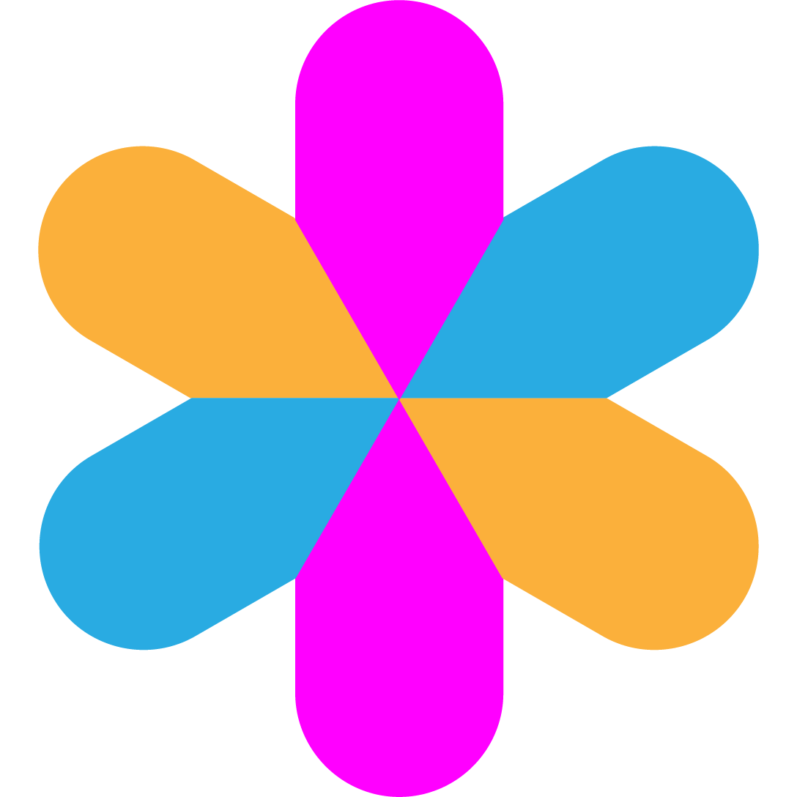

Vizuara 出品
推理工程
权威工作坊指南
LLM 推理工程之美：基础、可视化与实践。
作者
Dr. Raj Dandekar
Dr. Rajat Dandekar
Dr. Sreedath Panat
2026
目录
第一部分 · 基础
0
推理工程师的世界
1
三层架构
2
你将赖以生存的五个数字
3
Roofline 是我们的北极星
4
一页讲完预训练
·
面包屑 — 基础已奠定
第二部分 · KV Cache 与注意力
5
朴素推理及其冗余
6
机器（一台 GPU）
7
KV Cache 的善与恶
8
跨头压缩
9
跨 token 压缩
10
FlashAttention
第三部分 · 服务优化
11
PagedAttention
12
前缀缓存 + 分块预填充
·
面包屑 — 缓存已处理
13
量化
14
连续批处理
15
投机解码
16
Roofline 上的并行
·
面包屑 — 运行时层已完成
第四部分 · 生产级服务
17
分离式预填充/解码
18
复制、路由与多区域
19
vLLM 一步的解剖
20
推理引擎全景（2026）
第五部分 · 微调遇见推理
21
推理探索（Inference Quest）
22
微调、蒸馏与潜意识学习
第六部分 · 推理前沿
23
前沿——多模态与具身推理
第七部分 · Capstone
24
Capstone 1——速度优化服务器
25
Capstone 2——扩展到百万用户
26
Capstone 3——OpenClaw-RL
结语
27
推理工程之美